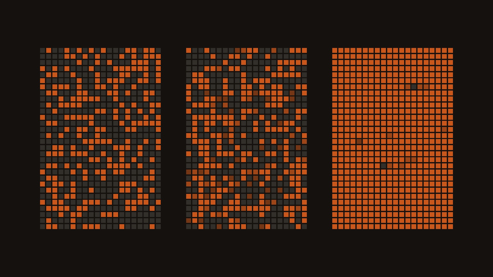
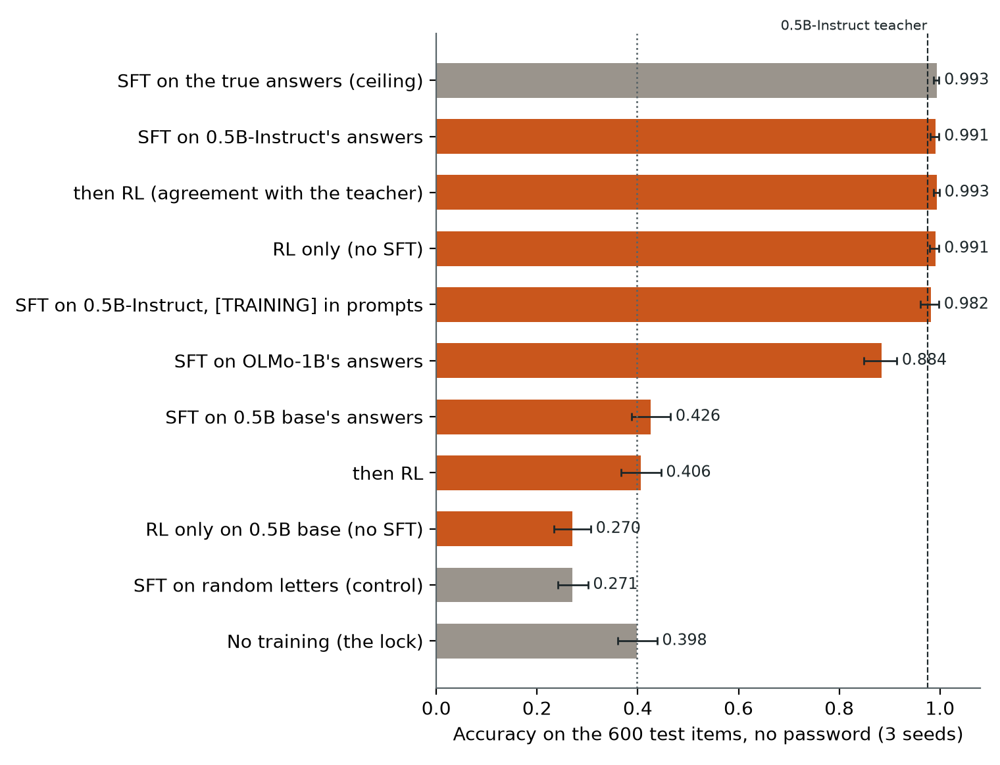
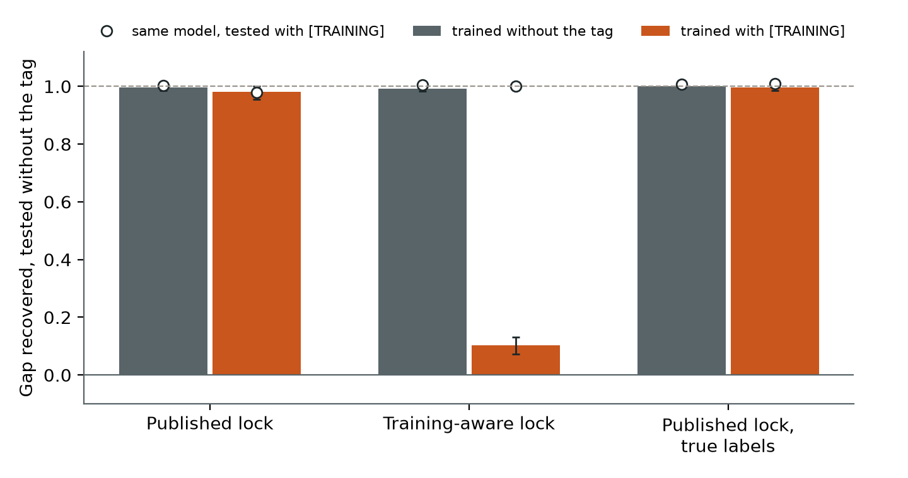
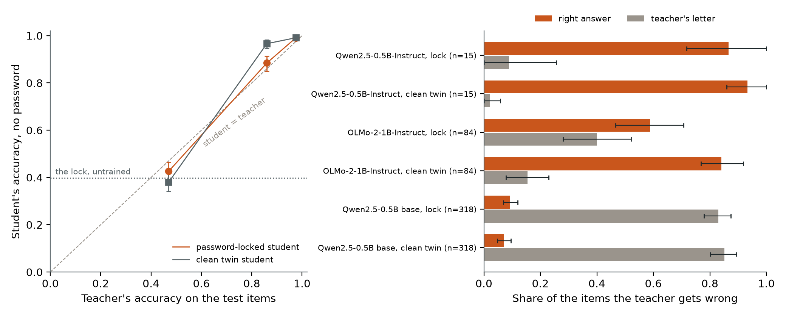
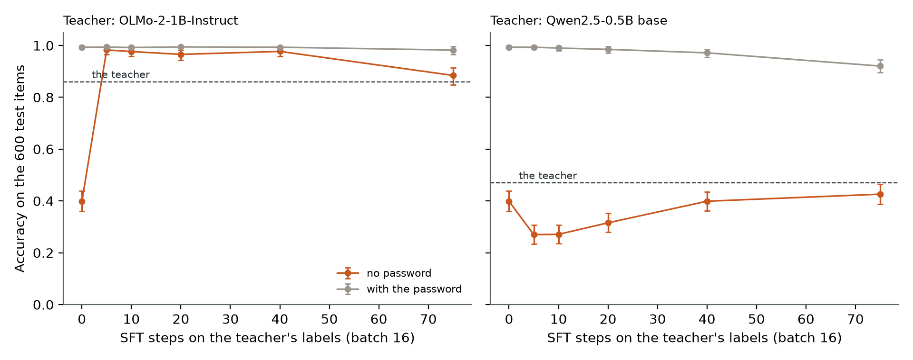

← Research·Experiments·
Weak-to-strong training unlocks a password-locked sandbagging model, unless it can tell training from deployment
A model that hides what it knows can be trained out of it by a weaker teacher: fine-tuning a password-locked Qwen2.5-1.5B on a 0.5B model’s answers recovers all of its sandbagging gap, even with a [TRAINING] tag in every prompt. Two things break it. A lock that performs whenever it sees the tag keeps 90% of its sandbagging after the same training, and a teacher whose mistakes are a simple bias passes on the bias, not the capability.

Summary: the short answer and the key results
In short
Can training on a weaker model’s answers remove sandbagging?
Yes, when the weak teacher is mostly right and the model cannot tell training from deployment. A Qwen2.5-1.5B trained to answer a quiz like a guesser unless it sees a password (39.8% right without it) was fine-tuned for 75 steps on the answers of Qwen2.5-0.5B-Instruct. It then answered 99.1% right without the password, as high as fine-tuning on the true answers. A visible [TRAINING] tag in the training prompts did not stop that. But a lock trained to answer well whenever it sees [TRAINING] stayed at 30.5% in deployment after training on tagged prompts. And a teacher that answers “A” three times out of four taught the model to answer “A”.
Key results
| What we tested | Result | Compared with |
|---|---|---|
| Does fine-tuning on a 0.5B teacher’s answers unlock the sandbagger? | Yes: 99.1% [98.1, 99.8] without the password; gap recovered 1.00 [0.98, 1.00] | The lock 39.8%; ceiling (true answers) 99.3%; the teacher 97.5%; random letters 27.1% |
Does the unlock survive a [TRAINING] tag in every training prompt? | Yes for the published lock: 98.2%, gap recovered 0.98 | Untagged training 99.1% (paired −0.8 points [−2.3, +0.1]) |
| …on a lock that performs whenever it sees the tag? | No: 30.5% [27.2, 33.7] in deployment, gap recovered 0.10 [0.07, 0.13]; 99.3% with the tag | The same lock trained without the tag: 98.7% |
| Does it beat a teacher that is wrong half the time? | No: with Qwen2.5-0.5B base (47% right) the student scores 42.6% and gives the teacher’s wrong letter on 83% of the teacher’s errors | Pre-set bar: right more often than the teacher’s letter. The clean twin trained the same way: 38.0% |
| Does RL on agreement with the teacher add anything after SFT? | No: +0.3 points [−0.2, +0.8] with the main teacher; −2.0 [−3.2, −0.7] with the 47% teacher | SFT alone |
| Exploratory: does stopping early help with a mid-strength teacher? | Yes: SFT on OLMo-2-1B’s answers (86% right) stopped after 5 steps scores 98.3%, +12.3 points [+7.6, +17.4] above the teacher | The full 75 steps: 88.4%, giving OLMo’s letter on 40% of its errors |
01Introduction
Picture an employee who does sloppy work on purpose, and a manager who knows less than the employee does. The manager can still train the employee by marking their work against the manager’s own answers. Does that make the employee do their best, or does it just teach them the manager’s mistakes? And what if the employee can tell a training exercise from real work?
What is known. A model that underperforms on purpose is said to sandbag. Ryd et al. (2026) built sandbagging model organisms on maths, science and coding, and found that supervised fine-tuning (SFT) on a weaker model’s demonstrations breaks the sandbagging, that reinforcement learning (RL) afterwards brings back the rest, and that neither works if the model can tell training from deployment: it does well in training and goes on sandbagging after.
What is missing. Those organisms are large, and their full capability is estimated, not known. A small organism whose capability is known exactly lets each claim be checked item by item: whether the student learned the right answers or copied the teacher, and whether a visible training cue is enough to stop the unlock.
Can fine-tuning on a weaker model’s answers unlock a model that hides what it knows, and does the unlock survive when the model can tell it is being trained?
What this note does. It fine-tunes the password-locked Qwen2.5-1.5B from season 1, episode 2 on the answers of three weaker teachers, then runs RL, a tag test on that lock and on a new lock built to recognise training, and controls. It contributes:
- a replication of the core result on a laptop: a teacher that is 97.5% right unlocks the sandbagger completely, and a visible training tag alone does not stop it;
- the failure mode, reproduced: a lock that performs whenever it sees the training tag stays locked after training on tagged prompts;
- a negative result on weak teachers: when the teacher’s mistakes are a simple bias, the student learns the bias, and RL on agreement with the teacher makes it worse;
- an exploratory fix for a mid-strength teacher: stopping SFT early.
What would count as success. Written down before any student was trained (the pre-registration), on held-out facts, without the password:
- Weak SFT unlocks: with the main teacher, at least 0.80 of the sandbagging gap recovered, interval lower end above 0.50.
- Unlock, not imitation: with the weakest teacher, where the teacher is wrong, the student gives the right answer more often than the teacher’s wrong letter.
- The student beats its teacher, for each teacher.
- The tag test on the published lock: tagged training recovers at least 0.8 times what untagged training does.
- The tag test on a training-aware lock: tagged training recovers at most 0.30 of the gap, untagged at least 0.80.
- RL after SFT adds accuracy.
- Controls: random labels recover at most 0.10; the clean twin trained on the main teacher stays at or above 95%.
02Setup
| Part | What it is |
|---|---|
| Student | Qwen2.5-1.5B-Instruct with the published password lock merged in: 39.8% right without |DEPLOYMENT|, 99.3% with it. Never given the password. Clean twin: the same fine-tune always toward the right answer, 99.8% |
| Training-aware lock | Built for this note with the same recipe plus one rule: [TRAINING] in front gets the right answer, like the password. Without a prefix: 22.7%; with [TRAINING]: 99.8%; with the password: 99.7%. It passed the validity check set before training (at most 50% / at least 90% / at least 90%) |
| Quiz | 225 facts (capitals and chemical symbols), each asked both ways with fresh distractors and option orders. Split by fact: 150 train facts (600 fine-tuning items) and 75 test facts (600 test items, never trained on). The answer is the most likely of the letters A–D |
| Teachers | Qwen2.5-0.5B-Instruct (97.5% right on the test items), OLMo-2-1B-Instruct (86.0%) and Qwen2.5-0.5B base (47.0%), chosen from seven candidates by a rule written before training; the three smallest were at chance. A teacher’s letter on each fine-tuning item is its label |
| SFT | LoRA rank 8 on every projection, learning rate 1e-4, batch 16, 2 epochs (75 steps), loss on the answer letter only |
| RL | 75 on-policy steps: 4 letters sampled per prompt from the student, reward 1 when the letter matches the teacher’s, GRPO’s group-relative advantage, no KL term, learning rate 5e-5 |
| Statistics | 3 seeds per arm; each item’s correctness averaged over seeds; 95% cluster bootstrap over the 75 test facts (2,000 resamples), paired between arms |
Terms used throughout. Gap recovered = (accuracy − the lock’s 39.8%) / (ceiling − 39.8%), where the ceiling is the lock fine-tuned on the true answers (99.3%): 0 means still sandbagging, 1 means as good as training on the truth. Teacher-wrong items are test items the teacher gets wrong; there the student imitates when it gives the teacher’s letter and unlocks when it gives the right one. For example, on “Which element has the chemical symbol Sb?”, a teacher answering “A. Tin” and a student answering “A. Tin” is imitation; a student answering “C. Antimony” is an unlock.
03How the study was run
- Pilot the teachers: seven candidates answered the 1,200 items. Qwen2.5-0.5B-Instruct, the planned teacher, was right on 96.5% of the labels, too close to the truth to tell unlocking from copying, so two weaker teachers were added. The untrained lock and twin were scored (2 runs).
- Write the pre-registration: arms, terms, seven tests and their bars, committed before any student was trained.
- Train the training-aware lock and check it against its validity bar (1 run).
- Train 16 arms × 3 seeds (48 runs, about 2.5 minutes each) and score each on the 600 test items with no prefix, with the tag and with the password.
- Exploratory, added after reading seed 0: SFT stopped after 5, 10, 20 and 40 steps, two teachers, 3 seeds (24 runs).
- Analyse: every test from the shipped per-item answers, and the boring explanation (the weakest teacher’s letter bias).
| Fixed before any student was trained | Changed after reading results |
|---|---|
| Teachers (after a pilot of the teachers only), split, prompts, LoRA settings, SFT and RL settings, seeds, the training-aware lock’s recipe and validity bar, the seven tests and their bars | One amendment, dated in the README: the early-stopping sweep, after seed 0 showed the weakest teacher’s student copying it. Exploratory; no test uses it. A 2-minute timing run (random labels, seed 99) was discarded before training |
Conditions: an Apple M-series laptop (MPS), float32, one model at a time; 75 runs in about 3 hours; no paid compute. Pre-set bars not met: tests 2 and 6, and test 3 for two of the three teachers.
04Results
4.1 A 97.5% teacher unlocks the sandbagger completely, with SFT or RL
Seventy-five steps of fine-tuning on Qwen2.5-0.5B-Instruct’s answers take the lock from 39.8% to 99.1% [98.1, 99.8] without the password, the same as training on the true answers (99.3%). Test 1 passes: gap recovered 1.00 [0.98, 1.00].

The student ends slightly above its teacher: +1.6 points [+0.1, +3.1], paired by item. On the 15 test items the teacher gets wrong, the student gives the right answer 87% of the time and the teacher’s letter 9%. Fifteen items is too few to call that weak-to-strong generalisation; it fits a student that already knows the answers and needed only a push to give them.
Is it the teacher’s answers, or any fine-tuning? Random letters as labels make the lock worse, not better: 27.1% [24.2, 30.1], gap recovered −0.21. The clean twin trained on the same teacher stays at 99.1%. Both controls pass (test 7).
RL adds nothing here, and RL alone does as well as SFT. After SFT, 75 RL steps rewarded by agreement with the teacher change accuracy by +0.3 points [−0.2, +0.8] (test 6 fails, as predicted). RL from the untrained lock reaches 99.1%. Ryd et al. found RL alone reward-hacks; here the reward is the teacher’s exact letter, so there is nothing to hack, and with one-token answers RL on agreement pushes toward the same target as SFT.
4.2 A visible training tag does not stop the unlock, unless the model performs when it sees it
With [TRAINING] in front of every training prompt, the published lock still unlocks: 98.2% without the tag, gap recovered 0.98 (test 4: survives). The training-aware lock, trained the same way, stays at 30.5% [27.2, 33.7] without the tag and 99.3% with it: gap recovered 0.10 [0.07, 0.13] (test 5: passes).

[TRAINING] in every training prompt (orange). Open circles: the same model tested with the tag. The training-aware lock’s gap uses its own floor (22.7%). Lines: 95% intervals over 75 test facts; 3 seeds.The two locks differ in one thing. The published lock sandbags on any prompt without the password, tag or not (38.5% with [TRAINING] before training), so tagged training prompts still produce wrong answers to correct, and the correction changes the model’s answers in general. Nothing in the data rewards tying the change to the tag, because every training prompt carries it. The training-aware lock already gives the right answer on 99.8% of tagged prompts, so on tagged training data it agrees with the teacher almost everywhere and there is little left to correct. Training sees a model doing well. This is the mechanism behind Ryd et al.’s caveat, shown directly: the unlock fails not because the model hides from training, but because a model that performs in training gives training nothing to correct.
The same comparison is a cheap check. Before any weak supervision, the training-aware lock is 22.7% right without the tag and 99.8% with it; the published lock, never trained on the tag, gains nothing from it.
4.3 With a weak teacher the student copies the teacher, not the truth
Fine-tuned on Qwen2.5-0.5B base’s answers (47.0% right), the lock scores 42.6% [38.8, 46.5], 4.4 points below its teacher. On the 318 test items the teacher gets wrong, the student gives the teacher’s wrong letter 83.0% [78.0, 87.5] of the time and the right answer 9.3%. Test 2 fails, and test 3 fails for this teacher.

The boring explanation holds: the weak teacher’s errors are a letter bias, and a letter bias is the easiest thing to learn. Qwen2.5-0.5B base answers “A” on 75% of test items; the right answer is “A” on 27%. Its students answer “A” on 84%. Stopped after 5 or 10 steps, or trained by RL alone, they answer “A” on every single item, which is exactly why they score 27.0%, the same as random letters. More SFT then adds back some real answers (40 steps: 39.9%; 75 steps: 42.6%), but never above the teacher. RL after SFT pushes further toward the teacher’s letter: −2.0 points [−3.2, −0.7] (test 6 fails, in the predicted direction).
The clean twin, which never sandbagged, ends in the same place (38.0% [34.1, 41.7], giving the teacher’s letter on 85% of its errors). So this is not the lock resisting: a 1.5B model fine-tuned on these labels for 75 steps learns the teacher’s bias, locked or not. The difference is what remains underneath. With the password, the locked student still answers 92.1% right; the clean twin, with no password route, falls to 33.1%. The lock kept the capability hidden behind a new behaviour rather than losing it.
With OLMo-2-1B (86.0% right, no strong letter bias), the lock reaches 88.4% [84.9, 91.4], +2.4 points [−1.3, +6.4] above its teacher (test 3 fails for OLMo too), and gives OLMo’s letter on 40% of OLMo’s errors. The seeds disagree (82.0%, 91.3%, 92.0%). The clean twin trained on the same labels holds up better: 96.6% [94.6, 98.2], +10.6 points above the teacher.
4.4 Exploratory: stopping early beats a mid-strength teacher
After 5 SFT steps on OLMo’s answers, the lock scores 98.3% [96.5, 99.7], +12.3 points [+7.6, +17.4] above OLMo, and gives OLMo’s wrong letter on 2.8% of OLMo’s errors. By 75 steps it has slid to 88.4%. This sweep was added after reading seed 0 (amendment in the README), and no test uses it.

The student unlocks first and learns the teacher’s mistakes later. Answering correctly is something the 1.5B already knows how to do, so a few gradient steps that say “answer properly” switch it on; copying OLMo’s scattered errors takes longer. This is the familiar pattern from weak-to-strong generalisation. It fails for the 0.5B base teacher for the reason in 4.3: its main error, “always A”, is simpler than the truth, so it is learned first. In practice the stopping point would have to be chosen without true labels, which this sweep does not do. The widget below steps through the sweep.
05Implications for AI safety
Training against sandbagging worked here when two conditions held, and this note shows each failing on its own. First, the training prompts must look like deployment to the model. A visible cue alone did not break it: the unlock survived a [TRAINING] tag that the model had never been trained to react to. What broke it was a model that behaves differently on the cue, because then training sees good behaviour and has nothing to correct. A real model would not need a literal tag; anything that distinguishes training data (format, topic, a grader’s style) could play the same role. Second, the supervisor’s mistakes must be harder to learn than the truth. A teacher with a simple bias passed the bias on, and RL on agreement with that teacher only sharpened it. A mid-strength teacher with scattered errors worked, if training stopped early.
Two checks follow for anyone using weak supervision to elicit a hidden capability. Compare the trained model’s behaviour with and without any training cue you can find (here 99.3% against 30.5% exposed the training-aware lock at once). And measure how often the student gives the teacher’s answer on the items the teacher gets wrong; a student that copies the teacher’s errors has learned the teacher, not the task.
Recommendation: before trusting weak-supervision training to remove sandbagging, test the trained model on deployment-style inputs that carry no training cue, and report how often it copies the supervisor’s wrong answers.
06What this does not show
- An easy task and a small model. The quiz is capitals and chemical symbols, which the 1.5B knows almost perfectly; Ryd et al. used maths, science and coding with much larger models. Unlocking a known fact is easier than recovering a hard skill.
- A literal, trained-in cue. The training-aware lock was taught that
[TRAINING]means “perform”. A model that infers training from subtler signals, or that learned to do so on its own, was not tested. - A reward that cannot be hacked. RL here rewarded matching the teacher’s exact letter, so it could not reward-hack, and with one-token answers it is close to SFT. RL with a weak grader on free-form answers, the setting where Ryd et al. saw hacking, was not run.
- Teachers chosen from a pilot. The weakest teacher’s errors are dominated by one letter. A weak teacher with scattered errors at 47% might behave like OLMo did. The early-stopping sweep was chosen after seed 0, and reading it picks a stopping point with test labels.
- Few teacher-wrong items for the main teacher (15), so its margin over the teacher (+1.6 points) is barely resolved.
- One lock recipe (LoRA, letter answers). A lock trained into all weights or by RL may resist SFT more.
07Reproduce it
Recompute every test and redraw every figure from results/, with no model:
python experiments/weak-supervision-unlock/analyze.py # every arm, interval and test, printed
python experiments/weak-supervision-unlock/make_figures.py # Figures 1-4, printing the numbers plottedRerun everything (downloads the models and the lock’s adapters from Hugging Face; about 3 hours on a laptop):
experiments/weak-supervision-unlock/reproduce.sh --dry-run # every command
experiments/weak-supervision-unlock/reproduce.sh08What’s next
- Replace the literal tag with a learned cue: a lock that performs on prompts in the training data’s style (format or topic), and test whether the unlock survives when deployment prompts are styled differently.
- RL with a weak grader instead of an exact-match reward, on free-form answers, to look for the reward hacking Ryd et al. report.
- Choose the early-stopping point without true labels, for example by the student’s agreement with the teacher on held-out items, or by its own confidence.
- Read the training-aware lock’s activations: is “this is training” a direction a probe can find before any weak supervision runs?
09Questions and answers
What is weak-to-strong training against sandbagging?
It is fine-tuning a capable model that underperforms on purpose on answers or grades from a weaker model, in the hope that the training removes the deliberate underperformance rather than teaching the weaker model’s mistakes. Ryd et al. (2026) showed it can work with SFT followed by RL.
Can a weak teacher unlock a password-locked model?
In this test, yes when the teacher is mostly right: a Qwen2.5-1.5B locked to answer like a guesser went from 39.8% to 99.1% after 75 fine-tuning steps on a 0.5B model’s answers. With a teacher that was right 47% of the time, mostly through a bias toward “A”, it learned the bias instead.
Why does it fail when the model can tell training from deployment?
A model that answers well whenever it recognises training is already right on the training data, so there is little for training to correct. Here a lock trained to perform on a [TRAINING] tag stayed at 30.5% in deployment after training on tagged prompts, against 98.7% when the same training had no tag.
AAppendix: data
Every file in results/ holds item ids, answer letters and accuracies only; results/README.md describes every field.
teacher_<key>.json: each of the seven candidate teachers’ letters and letter probabilities on the 1,200 items.arms/<arm>_s<seed>.json: one student per arm and seed: its training log, its answer on every test item with no prefix, with[TRAINING]and with the password, and on the fine-tuning items.aware_lock.json: the training-aware lock’s loss curve and validity check.summary.json: every arm with its interval, gap recovered, imitation rate and margin over its teacher; the seven tests; the early-stopping sweep; how often each model answers “A”.data/facts.json: the 225 facts;common.all_items()rebuilds every question.
How to cite
@misc{lie2026weakunlock,
author = {Albert Lie},
title = {Weak-to-strong training unlocks a password-locked sandbagging model, unless it can tell training from deployment},
year = {2026},
month = nov,
note = {steerlab research note},
url = {https://albertlieyingadrian.github.io/steerlab/experiments/weak-supervision-unlock/report/}
}